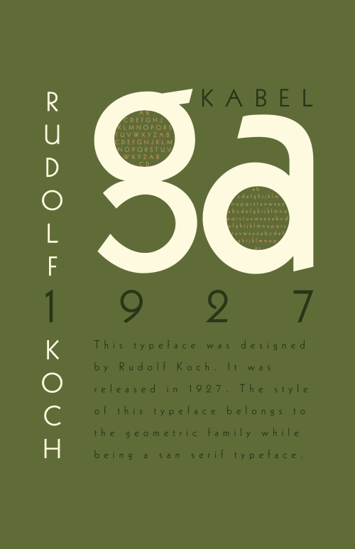

Project 1 - Digital Color Poster
This project was about drawing my room in perspective view, and then use Adobe Illustrator to draw it in four color schemes.
My choice of color scheme
Complementary color scheme
Analogus color scheme
Monochromatic color scheme
Project 2 - Typeface Poster
This project was about choosing a typeface and research about it. Then use Adobe Indesign to create a intersting layout and composition using only the typeface's letters to tell the background of this typeface while showcasing the interesting and unique characteristic of this typeface.

Project 3 - Legacy Poster
This project was about choosing a deceased artist, or designer. Then research about that person and look for images of the artist, or designer's work to create a interesting layout and composition using Adobe Photoshop along with the name of the artist or designer as well as the year he/she was born to the year he/she was deceased.
Project 4 - Event Poster
This project was about creating a event poster for a event that either had already passed or creating a whole new event with, title of the event, basic information about the event, location, dates, and time. Then search photos on the web to be implemented using Adobe Photoshop. The event I chose for this project was the Chinatown Autumn Moon Festival that had happened in 2023 in San Francisco's Chinatown.